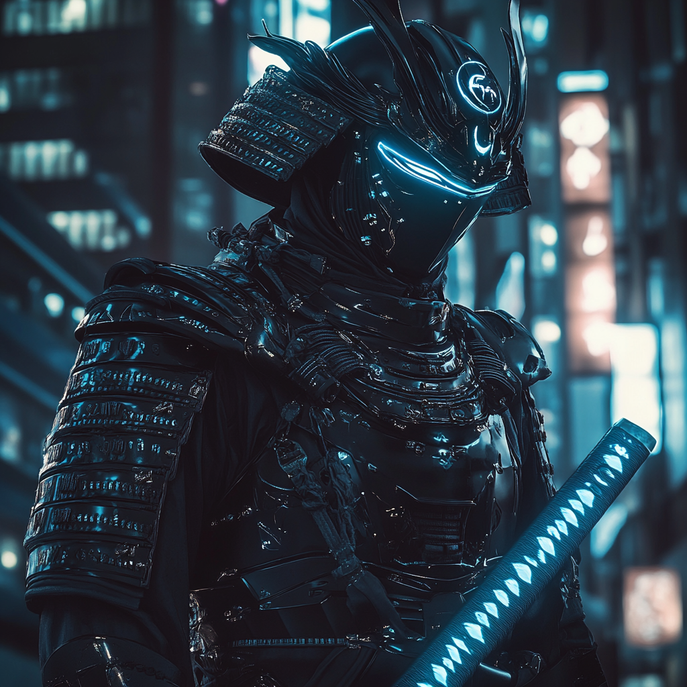

Nightblade: Shadow of Two Worlds

Chapter 1: Legacy of Steel
Shiro Tatsuya was born into a family that traced its samurai
lineage back to the Sengoku period. His father, Kenji
Tatsuya, maintained the family's martial traditions while
serving as a civilian contractor for the U.S. military base
in Okinawa. His mother, Akiko, taught traditional Japanese
arts at a local cultural center.
From age five, Shiro trained in kenjutsu and other martial arts under his father's strict guidance. His natural abilities manifested early—cuts healed with unusual speed, his senses proved sharper than his peers, and his reflexes exceeded even adult practitioners. His father recognized these signs but chose to focus on disciplining Shiro's mind and spirit rather than exploring his gifts.
Chapter 2: Between Two Worlds
At sixteen, Shiro's mutant abilities fully emerged during a
kendo tournament. In the final match, he instinctively
dodged strikes before they were launched and countered with
impossible speed. The incident drew attention from both
Japanese authorities and the U.S. military.
His father, fearing persecution, used his military connections to secure Shiro's enrollment in a special U.S. Marine Corps program. This program, officially designated for “enhanced individuals,” provided cover for mutants serving in the military while allowing them to develop their abilities in a controlled environment.
Chapter 3: The Warrior's Path
Shiro excelled in Marine training, combining his samurai
discipline with modern military tactics. His unit
specialized in counter-terrorism operations, where his
heightened senses and combat prowess proved invaluable. He
earned the call sign “Nightblade” for his preference for
night operations and skill with his family's ancestral
katana.
During a classified mission in Southeast Asia, Shiro's team encountered more than they bargained for—a cell of mutant terrorists wielding devastating powers. The ensuing battle left most of his unit dead or critically wounded. Only Shiro's healing factor and combat training allowed him to survive and complete the mission.
Chapter 4: A New Purpose
The mission's aftermath brought Shiro to the attention of
Hawkeye, who had been tracking the terrorist cell. Impressed
by Shiro's combination of mutant abilities, military
experience, and samurai discipline, Hawkeye recommended him
for the Boston Avengers Academy.
The Marine Corps, recognizing the value of having an operative in the Avengers program, approved a special assignment that allowed Shiro to train at BAA while maintaining his military status. His father saw this as an honorable path, merging his ancestral traditions with his modern sense of duty.
Chapter 5: Steel and Shadow
At BAA, Shiro's unique blend of samurai discipline, military
expertise, and mutant capabilities set him apart from his
classmates. His rigorous training regimen and focus on honor
quickly established him as both a resource and a mentor. He
complemented TitanPrime's raw strength with disciplined
tactics and helped coordinate with Mandible's stealth
operations. Mind Wave found Shiro's structured mindset
beneficial for strategic planning.
Shiro continued to wear modified samurai armor—painted black and reinforced with modern materials. Coupled with his family's katana, this became his signature look as Nightblade. The ancient blade, passed through generations of Tatsuya samurai, appeared to resonate with his mutant powers in ways even he didn't fully understand.
Present Day
Shiro follows a strict schedule at BAA, rising before dawn
to practice kata in the training grounds. His quarters
reflect his dual identity: an orderly, military approach
infused with elements of traditional Japanese aesthetics.
Acting as a liaison between the Academy and military
authorities, he contributes to orchestrating missions that
require both superhuman capabilities and formal military
involvement.
His greatest challenge is juggling three separate aspects of his identity: samurai heritage, Marine obligations, and the evolving demands of his mutant hero role. In this confluence of ancient honor, modern discipline, and superhuman ability, Nightblade forges a unique warrior’s path suited for the complexities of the modern world.
Younger students may find him intimidating, but his teammates know him as a loyal ally whose deadly precision is tempered by an unwavering code of honor. He brings a tactical backbone to the BAA’s diverse roster, bridging gaps in strategy and perspective by embodying the synergy of two worlds—one shaped by the echoes of feudal Japan and the other by the demands of today’s superhero domain.